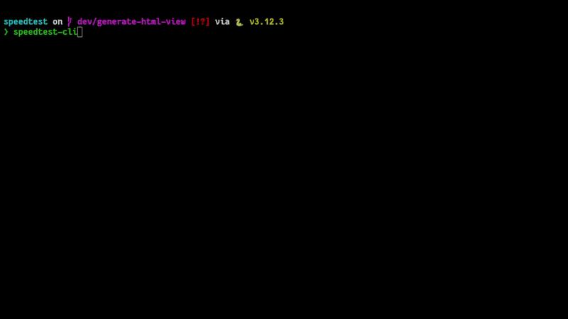
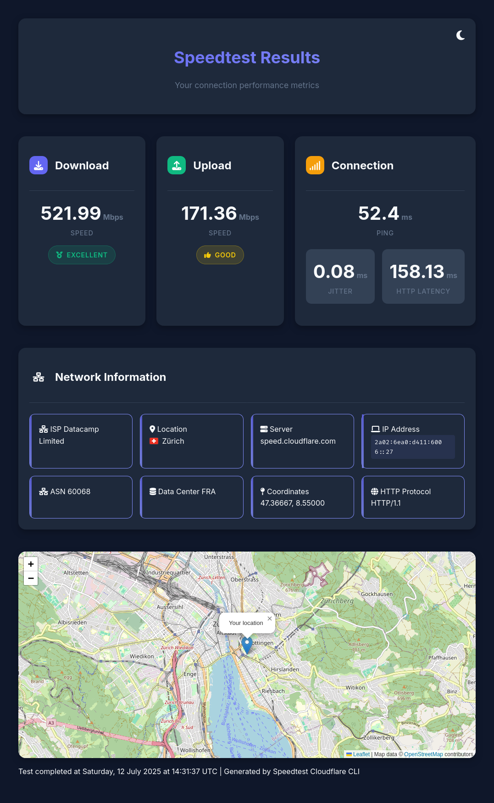

speedtest-cli
A fast, beautiful command-line tool for testing your network speed


Overview¶
speedtest-cli is a modern, feature-rich command-line tool that measures your internet connection speed with style. Built on Cloudflare's global infrastructure, it provides accurate speed measurements along with detailed network metrics, all displayed in a beautiful terminal interface.

Key Features¶
- Accurate Speed Testing - Powered by Cloudflare's global network for reliable measurements
- Comprehensive Metrics - Download/upload speeds, latency, jitter, and HTTP latency
- Beautiful Interface - Rich terminal output with progress bars and formatted tables
- Web Dashboard - Interactive HTML dashboard with maps and visualizations
- Flexible Output - Console display, JSON export, or silent mode for automation
- Network Details - ISP information, location data, IPv4/IPv6 support
- Cross-Platform - Works on Linux, macOS, and Windows
- Container Ready - Available as Docker/Podman image

Quick Start¶
Installation¶
Install using pipx (recommended) or uv:
# Using pipx
pipx install speedtest-cloudflare-cli
# Using uv
uv tool install speedtest-cloudflare-cli
See the Installation Guide for more options.
Basic Usage¶
Run a complete speed test:
speedtest-cli

Open results in an interactive web dashboard:
speedtest-cli --web_view
Export results to JSON:
speedtest-cli --json-output results.json
See the Usage Guide for all available options and examples.
Why speedtest-cli?¶
- Cloudflare Infrastructure - Leverage one of the world's largest and fastest networks
- Privacy Focused - No account required, no tracking, open source
- Modern Python - Built with type hints, async support, and modern best practices
- Beautiful UX - Powered by Rich for stunning terminal output
- Automation Friendly - JSON output and silent mode for scripts and monitoring
Quick Links¶
- Installation - Detailed installation instructions for all platforms
- Usage Guide - Complete guide to all CLI options and features
- Features - In-depth look at capabilities and metrics
- Web Dashboard - Interactive dashboard features
- Docker - Running in containers
- API Reference - Using as a Python library
- Contributing - Development setup and guidelines
- FAQ - Common questions and troubleshooting
Running in a Container¶
Pre-built container images are available:
# Using Podman
podman run --rm -it ghcr.io/takitsu21/speedtest:latest
# Using Docker
docker run --rm -it ghcr.io/takitsu21/speedtest:latest
See the Docker Guide for more details.
Example Output¶
When you run speedtest-cli, you'll see:
- Connection Information - Your IP, ISP, and location
- Progress Tracking - Real-time progress bars for downloads/uploads
- Results Table - Formatted table with all metrics:
- Download speed (Mbps)
- Upload speed (Mbps)
- Ping latency (ms)
- Jitter (ms)
- HTTP latency (ms)
Support¶
- Documentation - You're reading it!
- Issues - GitHub Issues
- Discussions - GitHub Discussions
License¶
This project is licensed under the MIT License - see the LICENSE file for details.